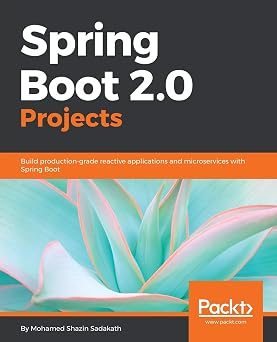
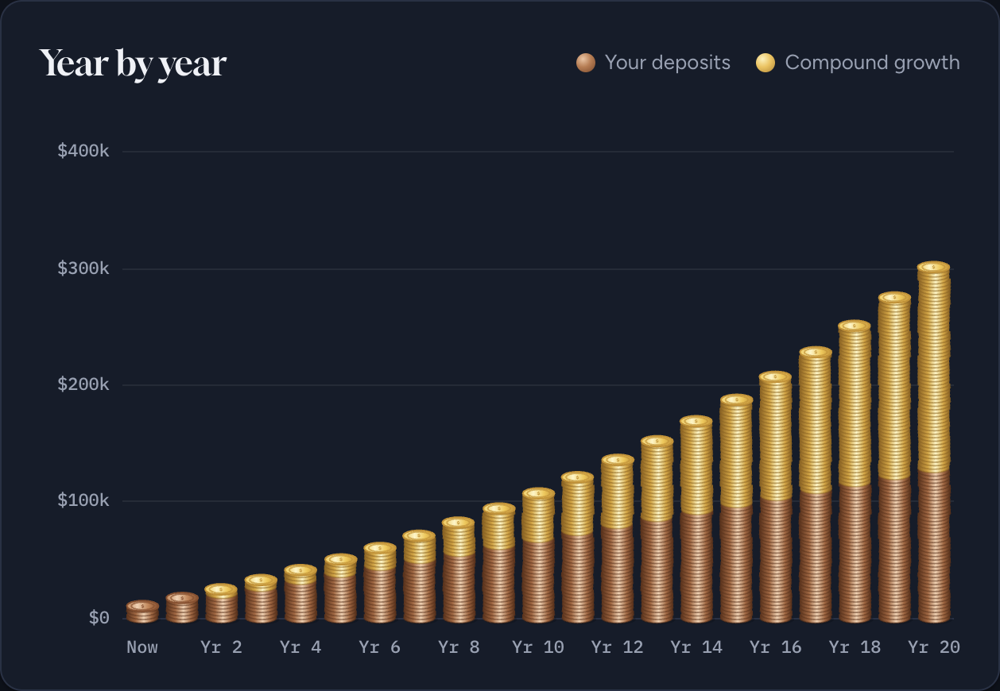

Backend & APIs
Designing application services, APIs, and asynchronous request flows.
ENGINEERING · EXPLORATION · BUILDING
I’m Shazin, a software engineer with a long-standing interest in backend engineering, distributed systems, and the creative edge where software meets hardware.
I like understanding how things work—and then making them work better.
My work and side projects span Java and the Spring ecosystem, data stores, event-driven systems, and hands-on IoT experiments. I’m especially drawn to problems that reward careful design, clear trade-offs, and a willingness to learn by building.
I also write about the ideas behind the code: architecture, concurrency, reactive programming, and the occasional hardware project.
Designing application services, APIs, and asynchronous request flows.
Exploring persistence choices, event streams, and decoupled architectures.
Connecting microcontrollers, sensors, and software into useful experiments.
Worked directly with a US Fortune 100 client on-site, gathering and shaping requirements.
Worked in Enterprise Integration Services for a US-based insurance client, building cohesive, loosely coupled software.
Led iOS, QA, and business analyst teams on an education project for a Japanese client. Designed REST services with Spring Boot, Spring Security OAuth, and MySQL, plus an AngularJS administration console.
Developed and supported software for Immoweb, a leading property search portal in Belgium, using Java EE, Spring, QueryDSL, MS SQL Server, and Jersey REST.
Developed, configured, and tested software including MyResults, an outcome-based budgeting system for the Government of Malaysia.
Promoted after one year and received the Personal Excellence Process award in 2011 for adherence to software engineering processes.
Joined as a Top Talent and contributed to software for Iron Mountain, supporting corporate document archiving.
Redesigned, redeveloped, and retested the OpenMRS Module Administration page to improve starting, stopping, and reloading modules.
Developed Java SE software for telecommunications billing and mediation.
First Class Honours. Batch Representative, 2007–2010; activities included Sports Meets and Stage Craft Drama.
First Class Honours.
Member of the Interact Club.

BOOK · PACKT PUBLISHING · 2018
Build production-grade reactive applications and microservices with Spring Boot
A hands-on guide to building real-world projects with Spring Boot, including reactive services, microservices, and asynchronous applications.
View on AmazonA small service-based example exploring independently deployable components, asynchronous messaging, and RabbitMQ.
View projectAn exploration of a graph-database backend for ACL data, including a comparison with a relational approach.
View projectA connected-device prototype sending illumination readings from Arduino through MQTT and Kafka to a Raspberry Pi.
View projectA practical investigation into composing asynchronous data flows with RxJava and Spring MVC.
Read the write-upNo projects in this category yet.
Learning in public, one project and one question at a time.
Browse the blog
PERSONAL FINANCE · INTERACTIVE LEARNING Investment Compound Calculator Explore how monthly contributions and compound growth can build over time with this interactive calculator.